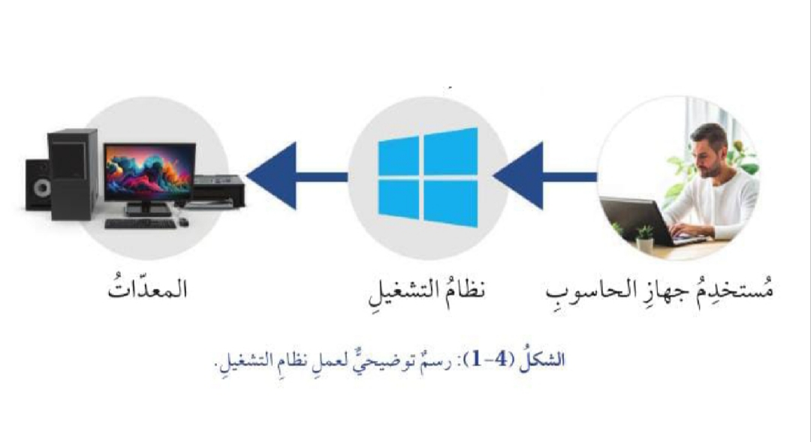
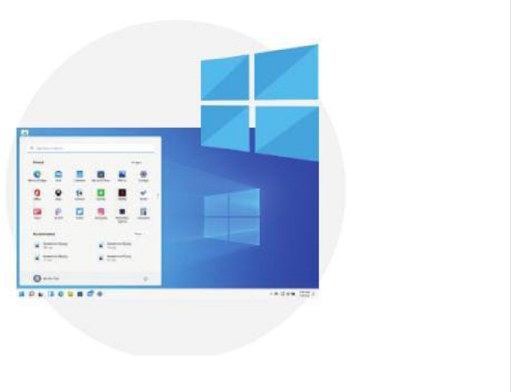
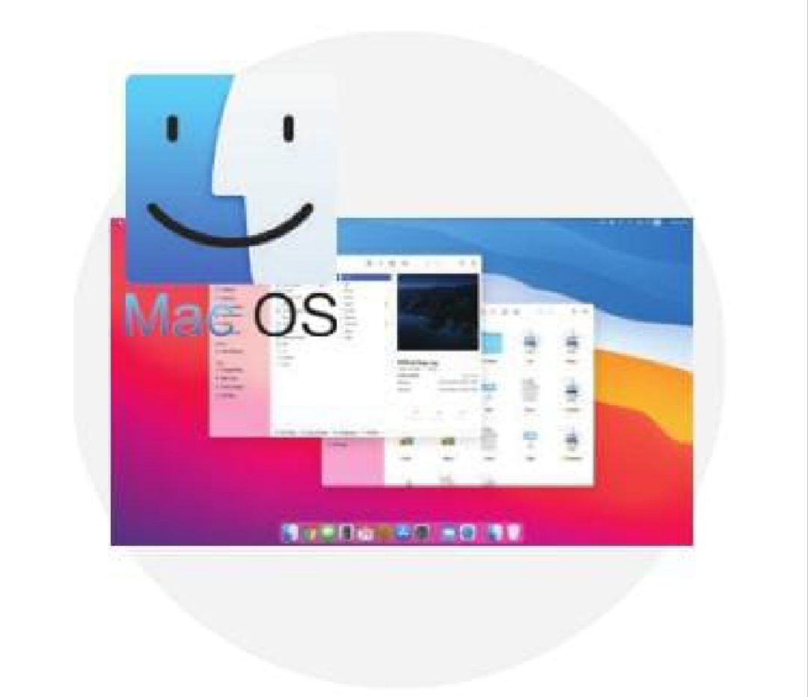
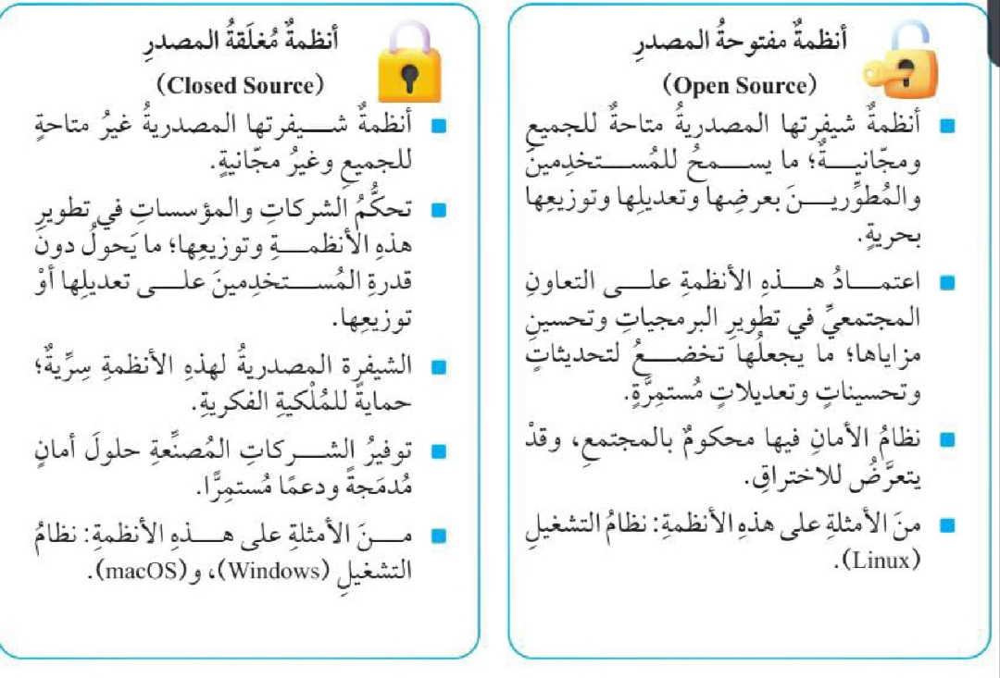
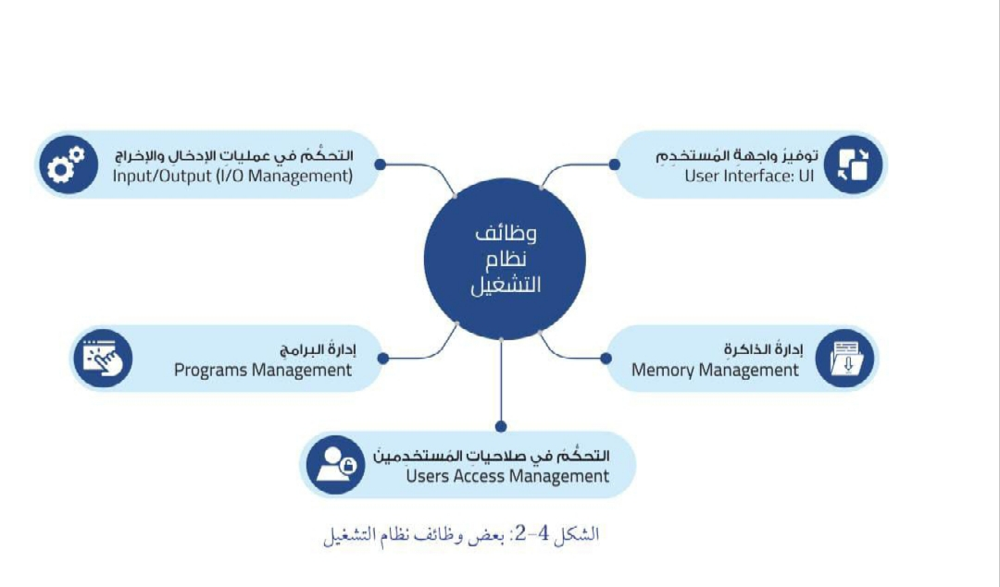
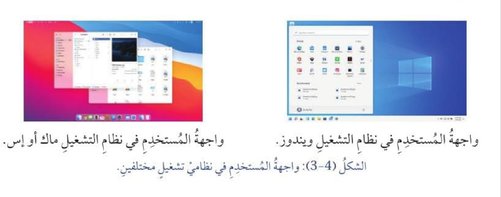
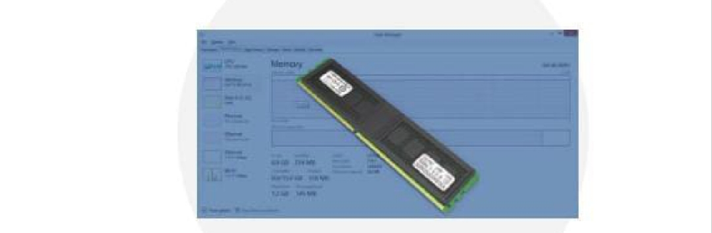
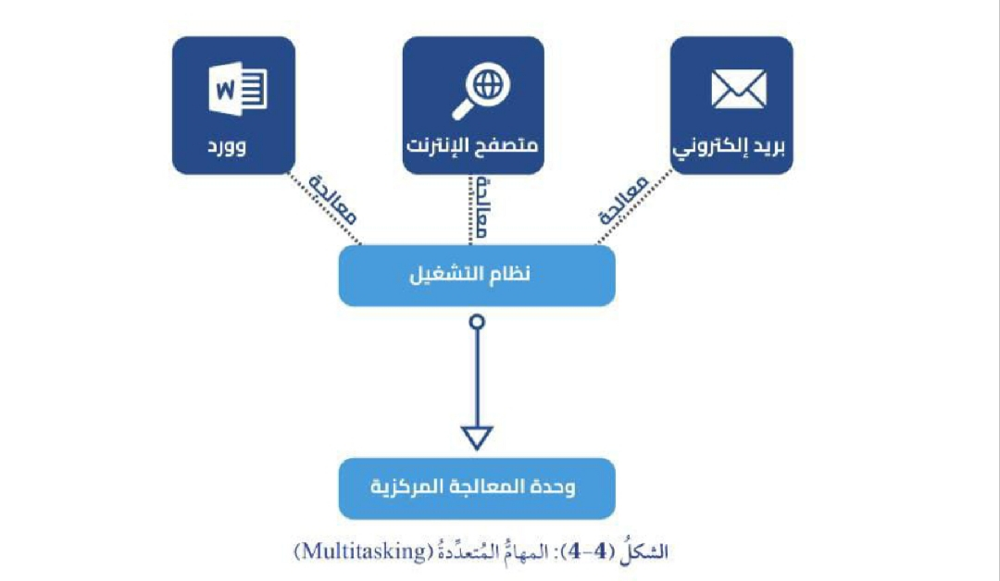

📚 شرح الدرس
سنتعرف في هذا الدرس إلى أنظمة التشغيل ووظائفها، وكيفية إدارتها لذاكرة الحاسوب والبرامج والأجهزة والملفات وحسابات المستخدمين.
🔊 القراءة الصوتية للدرس
أولًا: مفهوم نظام التشغيل
وضّح المقصود بنظام التشغيل (Operating System).

ثانيًا: أمثلة على أنظمة التشغيل في جهاز الحاسوب
1. مايكروسوفت ويندوز (Microsoft Windows)
طوّرت شركة مايكروسوفت نظام التشغيل ويندوز في منتصف عقد الثمانينيات من القرن الماضي.
ثم توالى ظهور العديد من الإصدارات لهذا النظام، ومنها نظام التشغيل ويندوز 10 ونظام التشغيل ويندوز 11.

2. ماك أو إس (macOS)تُعد سلسلة أنظمة التشغيل ماك أو إس أحد أشهر أنظمة التشغيل لشركة آبل (Apple).
وبالرغم من أن أجهزة الشركة أكثر تكلفة من غيرها، فإن كثيرًا من الأشخاص يفضّلون نظام تشغيل آبل على نظام التشغيل ويندوز.

ثالثًا: أنظمة التشغيل مفتوحة المصدر ومغلقة المصدر
تُصنّف أنظمة التشغيل من حيث المصدر إلى نوعين رئيسين:
- أنظمة التشغيل مفتوحة المصدر.
- أنظمة التشغيل مغلقة المصدر.
اذكر أهم الفروقات بين أنظمة التشغيل مفتوحة المصدر وأنظمة التشغيل مغلقة المصدر.

رابعًا: وظائف نظام التشغيل

يتولى نظام التشغيل مجموعة من الوظائف التي تساعد على تشغيل جهاز الحاسوب وإدارة موارده وتنظيم عمله.1. واجهة المستخدم (User Interface)
وضّح المقصود بواجهة المستخدم.
أعط أمثلة على العناصر التي تلزم المستخدم للتفاعل مع جهاز الحاسوب.
تختلف واجهة المستخدم من نظام تشغيل إلى آخر؛ ولهذا، فقد يبدو التفاعل مع نظام تشغيل جديد أمرًا غير مألوف للوهلة الأولى.
إن أنظمة التشغيل الحديثة صُمّمت على نحو يجعل استخدامها سهلًا؛ ما يعني أن مبادئ الاستخدام الأساسية متشابهة في جميع الأنظمة.

2. إدارة الذاكرة (Memory Management)
ما الذي تتضمنه إدارة الذاكرة من عمليات؟

- إدارة ذاكرة الوصول العشوائي (RAM) وتنظيم استخدامها.
- حفظ البيانات بصورة دائمة على وسائط التخزين (مثل الأقراص الصلبة) واسترجاعها عند الحاجة.
كيف يساعد نظام التشغيل في إدارة ذاكرة الوصول العشوائي وتنظيم استخدامها؟
يساعد نظام التشغيل على منع حدوث تداخل بين البرامج والتطبيقات؛ لكيلا يؤثر ذلك في عملها بكفاءة وفاعلية، فضلًا عن ضمان الاستخدام الأمثل للذاكرة.
🧪 جرّب بنفسي: استكشاف حجم ذاكرة حاسوبي
أتحقق من حجم الذاكرة المتوافرة في جهاز الحاسوب الخاص بي عن طريق الدخول إلى إعدادات الجهاز (Device Settings).
بناءً على تفاعلي مع جهاز الحاسوب والبرامج التي أستخدمها، هل أحتاج إلى حجم ذاكرة أكبر؟
3. إدارة عمليات الإدخال والإخراج (Input/Output - I/O Management)
يتيح نظام التشغيل إدارة جميع العمليات المتعلقة بتلقي البيانات من أجهزة الإدخال، مثل:
- لوحة المفاتيح.
- الفأرة.
- الماسح الضوئي.
وكذلك إرسال البيانات إلى أجهزة الإخراج، مثل:
- الشاشات.
- الطابعات.
- السماعات.
ومن ثم، فإن هذا النوع من التحكم يساعد على ضبط العمليات ويضمن سيرها بسلاسة وكفاءة، فضلًا عن تنظيم آلية عمل الأجهزة المتنوعة ومنع تداخل بعضها في بعض.
4. إدارة البرامج (Programs Management)
وضّح المقصود بالمهام المتعددة.
يمتاز نظام التشغيل بالقدرة على فتح برامج متعددة وإدارتها في الوقت نفسه، وذلك بتخصيص وقت المعالجة بين البرامج المختلفة بسرعة كبيرة؛ ما يجعلها تبدو كأنها تعمل في اللحظة نفسها.

5. التحكم في صلاحيات المستخدمين (Users Access Management)
يعمل نظام التشغيل على تقنين استعمال الموارد والبيانات، ويحدد ذلك بناءً على حاجات المستخدم وصلاحياته.
ويضطلع نظام التشغيل بمهمتين أساسيتين:
- إدارة حسابات المستخدمين (User Account Management).
- إدارة الملفات (File Management).
6. إدارة حسابات المستخدمين (User Account Management)
كيف يعمل نظام التشغيل على إدارة حسابات المستخدمين؟
يتمثل ذلك في إنشاء نظام التشغيل حسابات جديدة للمستخدمين، وتعيين أسماء مستخدمين وكلمات مرور.
إنشاء نظام التشغيل حسابات جديدة للمستخدمين، وتعيين أسماء مستخدمين وكلمات مرور.
لتحديد مستويات الوصول (Access Levels) وضبط صلاحيات الاستخدام.
أنواع المستخدمين
حدد نظام التشغيل نوعين من المستخدمين، هما:
المستخدم العادي (Standard User)
مستخدم صلاحياته محدودة؛ إذ تمكّنه فقط من استخدام التطبيقات والوصول إلى ملفاته الخاصة.
المستخدم المسؤول (Administrator)
مستخدم لديه صلاحيات واسعة تشمل تثبيت البرامج وتغيير إعدادات النظام وإدارة حسابات المستخدمين الأخرى.
- وضّح المقصود بالمستخدم العادي والمستخدم المسؤول.
- اذكر الفرق بين المستخدم العادي والمستخدم المسؤول.
فائدة إدارة حسابات المستخدمين
توفّر إدارة حسابات المستخدمين الحماية لنظام التشغيل، وتنظم آلية عمل المستخدمين، وتمنح كلًا منهم شيئًا من الأمان والخصوصية.
7. إدارة الملفات (File Management)
تمكّن إدارة الملفات والمجلدات نظام التشغيل من تنظيمها، وتسهيل طرائق الوصول إليها وحفظها، فضلًا عن إيجاد طرائق لتخزين البيانات واسترجاعها بكفاءة.
أمثلة على مدير الملفات
كيف يمكن التمثيل على مدير الملفات في مايكروسوفت ويندوز ونظام ماك أو إس؟
مستكشف الملفات (File Explorer) الموجود في مايكروسوفت ويندوز.
فايندر (Finder) الموجود في نظام ماك أو إس.
📌 انتهيت من شرح الدرس الرابع
يمكنك الانتقال إلى أسئلة الدرس أو اختبار نفسك بعد الانتهاء من المراجعة.
✏️ أسئلة الدرس وحلولها 🧠 اختبر نفسك← العودة إلى فهرس الدروس